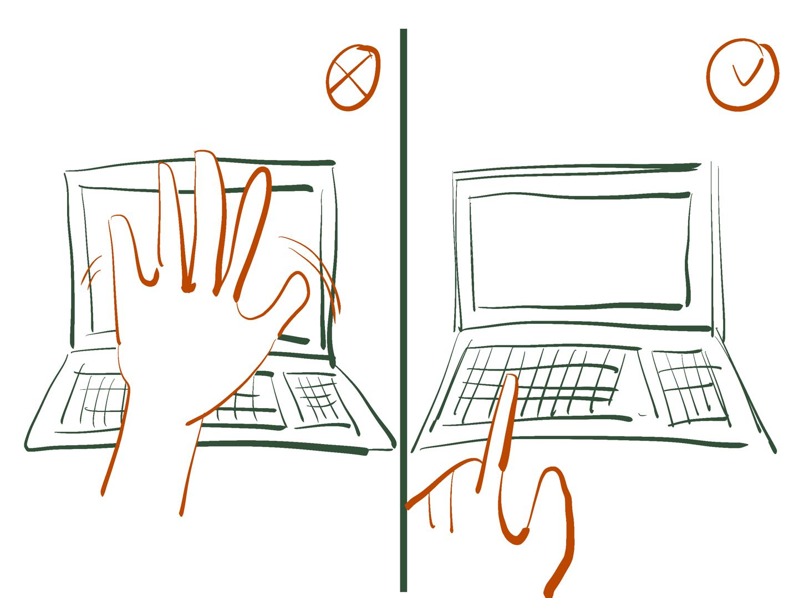

I selected some of my everyday interactive gestures, such as keyboard tapping, button pressing and screen swiping. We can see that when we (humans) interact with objects we need to interact with, these interactive gestures appear when we touch those objects.
It may be that we need to create a sense of "touch" when designing interactive web pages. Maybe we can simulate this touch in our lives by creating more click-through parts.
For now, interactions that we don't touch still don't appear in our lives, but maybe they will in the future?